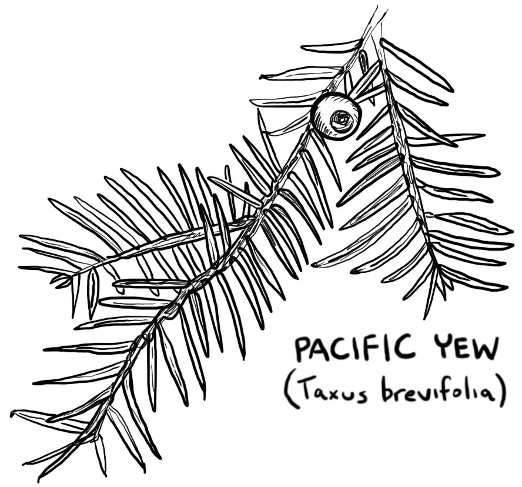
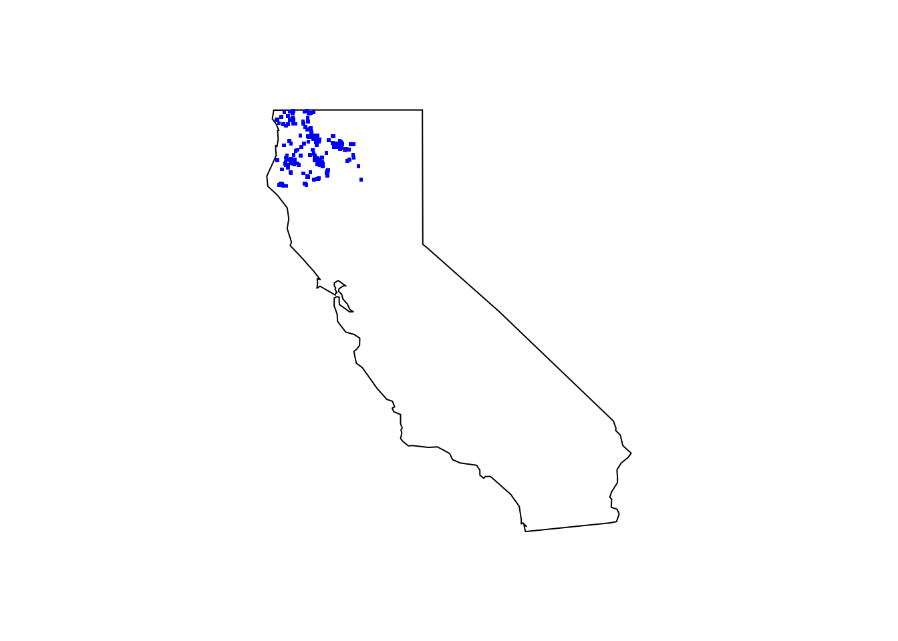

library(rinat)
library(tidyverse)Miracle Mile Species 1
species distribution
modeling
GIS
maps
data
trail run
exercise
explore
illustration
– Pacific Yew (Taxus brevifolia)

I have started checking off all the conifer species that occur in the Miracle Mile. I recently found some Pacific Yew (Taxus brevifolia) on a trail run with a friend. This was also my first post to iNaturalist. A good time to take a look at the data.
Load the libraries.
Load the data.
TrailRun1 <- read.csv("~/DATA/data/TrailRun_PacYew.csv")
glimpse(TrailRun1)Rows: 7,077
Columns: 10
$ X <int> 1, 2, 3, 4, 5, 6, 7, 8, 9, 10, 11, 12, 13, 14, 15, 16, …
$ timestamp <chr> "2022-02-27 16:41:35", "2022-02-27 16:41:43", "2022-02-…
$ position_lat <dbl> NA, NA, NA, NA, NA, NA, NA, NA, NA, NA, NA, NA, NA, NA,…
$ position_long <dbl> NA, NA, NA, NA, NA, NA, NA, NA, NA, NA, NA, NA, NA, NA,…
$ distance <int> 0, 21, 24, 28, 32, 36, 41, 41, 51, 55, 59, 64, 68, 72, …
$ altitude <dbl> NA, 791.2, 790.8, 790.6, 790.4, 790.4, 790.0, 789.6, 78…
$ cadence <int> NA, 87, 86, 85, 84, 84, 85, 87, 87, 87, 87, 85, 85, 84,…
$ speed <dbl> NA, 2.58, 2.58, 2.92, 2.92, 3.34, 3.34, 3.78, 3.78, 4.0…
$ temperature <int> NA, 25, 25, 25, 25, 25, 25, 25, 25, 25, 24, 24, 24, 24,…
$ vertical_speed <dbl> NA, -0.02, -0.04, -0.06, -0.06, -0.08, -0.10, -0.10, -0…Make a Northern California polygon for iNaturalist, pull in the data and take look.
bounds <- c(40.194, -124.4323, 42.0021, -120)
species <- c("taxus brevifolia")
pacyew_iNat <- get_inat_obs(query = species, bounds = bounds, maxresults = 1000, quality = "research")
dim(pacyew_iNat)[1] 285 37I had one of the newest observations of this species in the data set. My username is rjcmarkelz.
glimpse(pacyew_iNat)Rows: 285
Columns: 37
$ scientific_name <chr> "Taxus brevifolia", "Taxus brevifolia…
$ datetime <chr> "2024-03-14 09:53:00 -0700", "2024-02…
$ description <chr> "", "", "", "", "", "", "", "", "", "…
$ place_guess <chr> "Willow Creek, CA, USA", "Shasta-Trin…
$ latitude <dbl> 40.90617, 41.13873, 41.23730, 41.1107…
$ longitude <dbl> -123.7070, -122.1695, -122.2685, -123…
$ tag_list <chr> "", "", "", "", "", "", "", "", "", "…
$ common_name <chr> "Pacific yew", "Pacific yew", "Pacifi…
$ url <chr> "https://www.inaturalist.org/observat…
$ image_url <chr> "https://inaturalist-open-data.s3.ama…
$ user_login <chr> "colmanbc", "taradurb", "herbaljunkie…
$ id <int> 202457147, 200553158, 197615086, 1933…
$ species_guess <chr> "Taxus brevifolia", "Pacific yew", "P…
$ iconic_taxon_name <chr> "Plantae", "Plantae", "Plantae", "Pla…
$ taxon_id <int> 55209, 55209, 55209, 55209, 55209, 55…
$ num_identification_agreements <int> 1, 2, 3, 2, 2, 2, 1, 2, 2, 1, 2, 2, 2…
$ num_identification_disagreements <int> 0, 0, 1, 0, 0, 0, 0, 0, 0, 0, 0, 0, 0…
$ observed_on_string <chr> "2024/03/14 9:53 AM", "2024-02-24 13:…
$ observed_on <chr> "2024-03-14", "2024-02-24", "2023-09-…
$ time_observed_at <chr> "2024-03-14 16:53:00 UTC", "2024-02-2…
$ time_zone <chr> "Pacific Time (US & Canada)", "Pacifi…
$ positional_accuracy <int> 218, 4, 179, 100, 5005, 4, 9, 10, 4, …
$ public_positional_accuracy <int> 218, 4, 179, 100, 5005, 4, 9, 10, 4, …
$ geoprivacy <chr> "", "", "", "", "", "", "", "", "", "…
$ taxon_geoprivacy <chr> "open", "open", "open", "open", "open…
$ coordinates_obscured <chr> "false", "false", "false", "false", "…
$ positioning_method <chr> "", "", "gps", "", "", "", "", "", ""…
$ positioning_device <chr> "", "", "gps", "", "", "", "", "", ""…
$ user_id <int> 4765474, 4070907, 7728335, 2101146, 3…
$ user_name <chr> "colmanbc", "Tara Durboraw", "", "Zan…
$ created_at <chr> "2024-03-14 22:04:15 UTC", "2024-02-2…
$ updated_at <chr> "2024-03-15 01:08:03 UTC", "2024-02-2…
$ quality_grade <chr> "research", "research", "research", "…
$ license <chr> "CC-BY-NC", "", "CC-BY-NC", "CC-BY-NC…
$ sound_url <lgl> NA, NA, NA, NA, NA, NA, NA, NA, NA, N…
$ oauth_application_id <int> NA, 3, 2, 3, 333, 3, 3, 3, NA, NA, NA…
$ captive_cultivated <chr> "false", "false", "false", "false", "…head(pacyew_iNat$user_login, 10) [1] "colmanbc" "taradurb" "herbaljunkies" "zanethebrain"
[5] "paige15" "mikhela" "danjuel" "zanethebrain"
[9] "mikhela" "mikhela" Here is my image that I uploaded. I had a species confirmation from the community within 12 hours.

Quick map to show all the observations.
maps::map(database = "state", region = "california")
points(TrailRun1[ , c("position_long", "position_lat")], pch = ".", col = "red", cex = 3)
points(pacyew_iNat[ , c("longitude", "latitude")], pch = ".", col = "blue", cex = 3)
Make a quick plot to show the overlay of the run data and the coordinates of the image I took shown as a red dot.
tr_plot1 <- ggplot(TrailRun1, aes(x = position_long, y = position_lat)) +
coord_quickmap() + geom_point() +
ylab("Latitude") + xlab("Longitude") +
geom_point(aes(x=-122.1683, y=41.120),color="red", size = 5)
tr_plot1